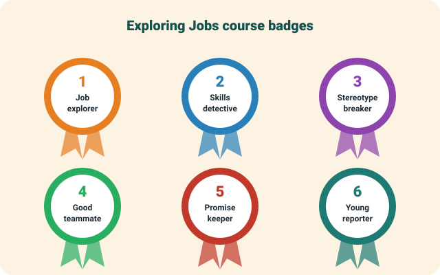

Resources › N1
Guide for parents and teachers
The Exploring Jobs course (N1) has 7 lessons, for an adult to lead with children aged about 6–15. This page helps you lead the course and print the templates you need.
What this course is
- Aim: to widen what children know about jobs, not to choose one. The course has no career-choice quiz.
- Four topics: exploring jobs around them; every job needs skills; anyone can do any job; working in a group and keeping promises in a task.
- The thread through the course: the Job card, with 5 boxes. Lesson 1 makes the cards, later lessons add to them and use them, and Lesson 7 puts them on display.
- Why start early: the Drawing the Future survey (2018) found that the job choices of children aged 7–11 often follow gender stereotypes. The OECD report Dream Jobs? (2020) found that gender still strongly shapes the jobs 15-year-olds hope for.
- At school: many school systems have careers or life-skills lessons. In Vietnam, for example, the 2018 General Education Curriculum (Circular 32/2018/TT-BGDĐT) includes compulsory experiential and career-guidance activities from grade 1 to grade 12. Teachers can use these lessons in such classes.
See the course map and lesson list.
Suggested 7-week schedule
One lesson a week: read it with the child for 15–20 minutes, then do the "Real-world application" during the week.
| Week | Lesson | Task for the week | Ages |
|---|---|---|---|
| 1 | Jobs around you | Job hunting, make 3 Job cards | 6–15 |
| 2 | Every job needs skills | Fill in box 5 on every card | 6–15 |
| 3 | Anyone can do this job | Find 2 real examples | 6–15 |
| 4 | Finishing a task together | Make a poster with a Task board | 6–15 |
| 5 | Taking on a task and keeping your promise | One household task with a deadline | 11–15; ages 9–11 with an adult |
| 6 | Interviewing someone about their job | Interview 1–2 people you know | 11–15; ages 9–11 with an adult |
| 7 | Review: your family's Job fair | Hold a Job fair | 6–15 |
For children aged 6–8: you can stop after Lesson 4, then do a simple version of Lesson 7. Leave Lessons 5 and 6 for later.
How to lead a lesson
- Ask first, explain later. Start with the Warm-up. Let the child try to remember before showing the answer.
- The child answers out loud. Younger children can draw. You can write for them.
- Use the hints one at a time. In Practice, open Hint 1 first; do not open the Model answer straight away.
- Reflection is not marked. Just ask and listen. There are no wrong answers.
- Praise how they did it, not "clever". For example: "You repeated back both the task and the deadline. Very clear."
Spaced review
Reviewing at intervals helps children remember longer than learning everything at once (Dunlosky and colleagues, 2013). After each lesson:
- Click "Mark as done" at the end of the lesson. The site suggests review dates after 1, 3 and 7 days, and creates a calendar reminder file (.ics) for your phone.
- Each review takes only 5 minutes: ask the 2 Warm-up questions again and redo the Self-check, without rereading the lesson first.
- From Lesson 2, each lesson has one question reviewing the previous lesson, so the ideas connect.
Privacy and safety
- The site collects no data about children. In N1 lessons, the Reflection part has no box to type in. Children answer out loud.
- The "Mark as done" button only saves the date on this device's browser. The site sends nothing anywhere.
- Interviews: only interview people the family knows, or people invited by the school. Always have an adult present. Ask permission before taking photos or recording. Do not post anything online without agreement.
- Do not post photos or drawings showing a child's name or face online unless it is really necessary.
Templates
Job card
Print and cut in half. Two cards per page.
| JOB CARD | |
|---|---|
| 1. Job name | |
| 2. What do they do? | |
| 3. Where? | |
| 4. What do they use? | |
| 5. What skills? (Lesson 2) | |
| JOB CARD | |
|---|---|
| 1. Job name | |
| 2. What do they do? | |
| 3. Where? | |
| 4. What do they use? | |
| 5. What skills? (Lesson 2) | |
Group Task board
Used in Lessons 4 and 7. Write only one person in charge for each task.
| Who | What | Done by when | Done ✓ |
|---|---|---|---|
Weekly calendar
Used in Lesson 5. Write the day the task was given, the halfway check day and the hand-in day.
| Mon | Tue | Wed | Thu | Fri | Sat | Sun |
|---|---|---|---|---|---|---|
Interview sheet
Used in Lesson 6. Person interviewed: someone the family knows. Adult present: ……………
| 1. What is your job? | |
|---|---|
| 2. What do you do in a day? | |
| 3. What tools or machines do you use? | |
| 4. What skills does this job need? | |
| 5. What is hard, and what is fun, in this job? | |
| Extra "why?" question |
Course review sheet
Used in Lesson 7 and for spaced review. The child answers out loud; the adult ticks ✓ when the child remembers.
| Question (without looking back) | Day 1 | Day 3 | Day 7 |
|---|---|---|---|
| 1. What are the 5 boxes of the Job card? (Lesson 1) | |||
| 2. Name 3 skills every job needs. (Lesson 2) | |||
| 3. Turn a stereotype into a question. (Lesson 3) | |||
| 4. What are the 3 columns of the Task board? (Lesson 4) | |||
| 5. What 2 things must an early warning say? (Lesson 5) | |||
| 6. Give an example of an open question. (Lesson 6) |
Badges

Original content, licensed CC BY-NC-SA 4.0. Updated 14/11/2026.